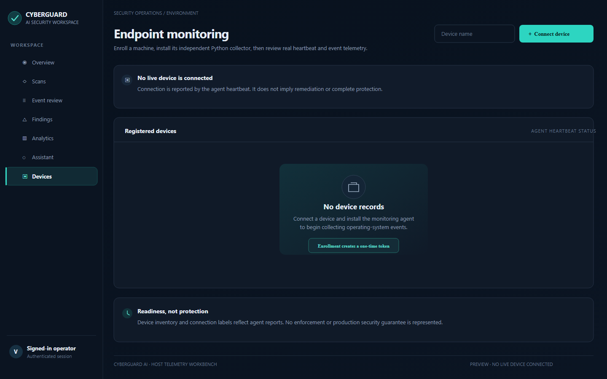

✓CYBERGUARD AI
HOST TELEMETRY WORKBENCH
Investigate the signal.
Keep the evidence.
CyberGuard AI adds independent endpoint monitoring to its security operations workbench. Preview the device enrollment experience below.
